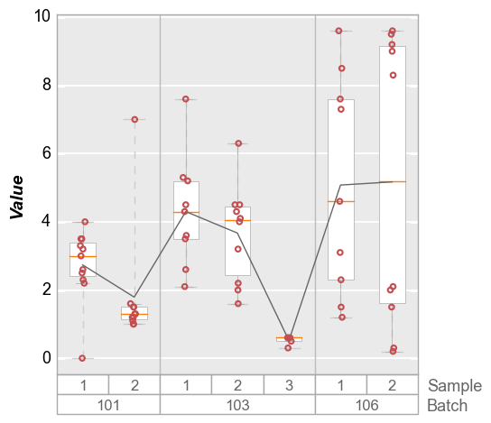

boxplot¶
- fcp.boxplot(**kwargs)¶
Box plot modeled after the “Variability Chart” in JMP which Dummy function to return convenient, multi-level group labels automatically along the x-axis.
- Parameters
df (pandas.DataFrame) – DataFrame containing data to plot
- Keyword Arguments
y (str) – y-axis column name contining the box plot data [REQUIRED]
box_divider (bool) – Toggle box divider visibility. Defaults to True. More details
box_divider_color (str) – Hex color string for the vertical line between groups. Defaults to #bbbbbb .
box_divider_style (str) – Line style for the box divider lines {‘-’, ‘–’, ‘-.’, ‘:’}. Defaults to -.
box_divider_width (float) – Width of the divider lines in pixels. Defaults to 1.
box_edge_color (str) – Hex color string for the edge of the box. Defaults to #aaaaaa . More details
box_edge_width (float) – Width of the edge of the boxes in pixels. Defaults to 0.5.
box_fill_color (str) – Hex color string of the bar fill . Defaults to #ffffff . More details
box_median_color (str) – Hex color string of the median line inside each box. Defaults to #ff7f0e .
box_on (bool) – Toggle box visibility. Defaults to True.
box_range_lines (bool) – Toggle the horizontal lines showing the min/max of the data range. Defaults to True. More details
box_range_lines_color (str) – Hex color string for the box range lines. Defaults to #cccccc .
box_range_lines_style (str) – Line style for the box range lines {‘-’, ‘–’, ‘-.’, ‘:’}. Defaults to –.
box_range_lines_width (float) – Width of the range lines in pixels. Defaults to 1.
box_whisker (bool) – Toggle range lines that extend from the box Q1/Q3 edges to the data min/max. Defaults to True. More details
box_whisker_color (str) – Hex color string for the box whisker lines. Defaults to #cccccc .
box_whisker_style (str) – Line style for the box whisker lines {‘-’, ‘–’, ‘-.’, ‘:’}. Defaults to -.
box_whisker_width (float) – Width of the whisker lines in pixels. Defaults to 0.5.
box_width (float) – Set the fractional width of the boxes between 0-1. Defaults to 0.5 [if violin on, 0.15].
groups (str|list) – Grouping columns for the box plot. Defaults to None. More details
notch (bool) – Use a notched-style box instead of a rectangular box. Defaults to False. More details
box_group_label_edge_alpha (float) – Transparency value for group label line edge between 0-1. Defaults to 1.
box_group_label_edge_color (str) – Hex color string for the group label rectangle edge. Defaults to #ffffff .
box_group_label_edge_width (float) – Width of the edge of the line around the group labels in pixels. Defaults to 1.
box_group_label_fill_alpha (float) – Transparency value for group label fill between 0-1. Defaults to 1.
box_group_label_fill_color (str) – Hex color string for the group label background color. Defaults to #ffffff .
box_group_label_font (str) – Font name for box group label. Defaults to Sans-serif.
box_group_label_font_color (str) – Hex color string for group label font. Defaults to #000000 .
box_group_label_font_size (float) – Font size for group label text in pixels. Defaults to 14.
box_group_label_font_style (str) – Font style for the group label text {‘normal’, ‘italic’, ‘oblique’}. Defaults to ‘normal’.
box_group_label_font_weight (str) – Font weight for the group label text {‘light’, ‘normal’, ‘medium’, ‘semibold’, ‘bold’, ‘heavy’, ‘black’}. Defaults to ‘normal’.
box_group_title_edge_alpha (float) – Transparency value for group title line edge between 0-1. Defaults to 1.
box_group_title_edge_color (str) – Hex color string for the group title rectangle edge. Defaults to #ffffff .
box_group_title_edge_width (float) – Width of the edge of the line around the group titles in pixels. Defaults to 1.
box_group_title_fill_alpha (float) – Transparency value for group title fill between 0-1. Defaults to 1.
box_group_title_fill_color (str) – Hex color string for the group title background color. Defaults to #ffffff .
box_group_title_font (str) – Font name for box group title. Defaults to Sans-serif.
box_group_title_font_color (str) – Hex color string for group title font. Defaults to #000000 .
box_group_title_font_size (float) – Font size for group title text in pixels. Defaults to 14.
box_group_title_font_style (str) – Font style for the group title text {‘normal’, ‘italic’, ‘oblique’}. Defaults to ‘normal’.
box_group_title_font_weight (str) – Font weight for the group title text {‘light’, ‘normal’, ‘medium’, ‘semibold’, ‘bold’, ‘heavy’, ‘black’}. Defaults to ‘normal’.
box_grand_mean (bool) – Toggle visibility of a line showing the mean of all data on the plot. Defaults to False. More details
box_grand_mean_color|grand_mean_color (str) – Hex color string for the grand mean line. Defaults to #555555 .
box_grand_mean_style|grand_mean_style (str) – Line style for the box grand mean lines {‘-’, ‘–’, ‘-.’, ‘:’}. Defaults to ‘-’.
box_grand_mean_width|grand_mean_width (float) – Width of the grand mean line in pixels. Defaults to 1.
box_grand_median (bool) – Toggle visibility of a line showing the median of all data on the plot. Defaults to False. More details
box_grand_median_color|grand_median_color (str) – Hex color string for the grand median line. Defaults to #0000ff.
box_grand_median_style|grand_median_style (str) – Line style for the box grand median lines {‘-’, ‘–’, ‘-.’, ‘:’}. Defaults to ‘-’.
box_grand_median_width|grand_median_width (float) – Width of the grand median line in pixels. Defaults to 1.
box_group_mean (bool) – Toggle visibility of a line showing the mean of each data group on the plot. Defaults to False. More details
box_group_mean_color|group_mean_color (str) – Hex color string for the group mean line. Defaults to #555555 .
box_group_mean_style|group_mean_style (str) – Line style for the box group mean lines {‘-’, ‘–’, ‘-.’, ‘:’}. Defaults to ‘-’.
box_group_mean_width|group_mean_width (float) – Width of the group mean line in pixels. Defaults to 1.
box_stat_line (str) – Set the statistic for the connecting line {‘mean’, ‘median’, ‘std’, ‘qXX’ [qunatile where XX is a number between 0-100]}. Defaults to mean. More details
box_stat_line_color (str) – Hex color string for the stat line. Defaults to #666666 .
box_stat_line_on (bool) – Toggle visibility of the stat line between boxes. Defaults to True.
box_stat_line_width (float) – Width of the stat line in pixels. Defaults to 1.
box_mean_diamonds_alpha|mean_diamonds_alpha (float) – Transparency value for the diamonds between 0-1. Defaults to 1.
box_mean_diamonds_edge_color|mean_diamonds_edge_color (str) – Hex color string for the edges of the diamond. Defaults to #FF0000 .
box_mean_diamonds_edge_style|mean_diamonds_edge_style (str) – Line style for the diamonds lines {‘-’, ‘–’, ‘-.’, ‘:’}. Defaults to ‘-’.
box_mean_diamonds_edge_width|mean_diamonds_edge_width (float) – Width of the diamond lines in pixels. Defaults to 0.7.
box_mean_diamonds_fill_color|mean_diamonds_fill_color (str) – Hex color string for the fill of the diamond. Defaults to None.
box_mean_diamonds_width|mean_diamonds_width (float) – Set the fractional width of the diamonds between 0-1. Defaults to 0.8.
box_mean_diamonds|mean_diamonds (bool) – Toggle visibility of a diamond overlay on the box showing the group mean and a confidence interval. Defaults to False. More details
conf_coeff (float) – Confidence interval from 0 to 1. Defaults to 0.95.
box_violin|violin (bool) – Toggle visibility of violin plot showing the distribution of box plot data. Defaults to False. More details
violin_box_color (str) – Hex color string for the fill of an optional box overlay on the violin. Defaults to #555555.
violin_box_on (bool) – Toggle visibility of a box over the violin plot. Defaults to True.
violin_edge_color (str) – Hex color string for the edge of the violins. Defaults to #aaaaaa .
violin_fill_alpha (float) – Transparency value for the violin plots between 0-1. Defaults to 0.5.
violin_fill_color (str) – Hex color string for the fill of the violins.
Defaults to fcp.DEFAULT_COLORS .violin_markers (bool) – Toggle visibility of data point markers on the violin plots. Defaults to False.
violin_median_color (str) – Hex color string for the median point in each violin. Defaults to #ffffff .
violin_median_marker (str) – Marker type for the median point in each violin. Defaults to ‘o’.
violin_median_size (int) – Size of the median point marker in each violin. Defaults to 2.
Examples
>>> import fivecentplots as fcp >>> from pathlib import Path >>> import pandas as pd >>> df = pd.read_csv(Path(fcp.__file__).parent / 'test_data/fake_data_box.csv') >>> fcp.boxplot(df, y='Value', groups=['Batch', 'Sample'])
